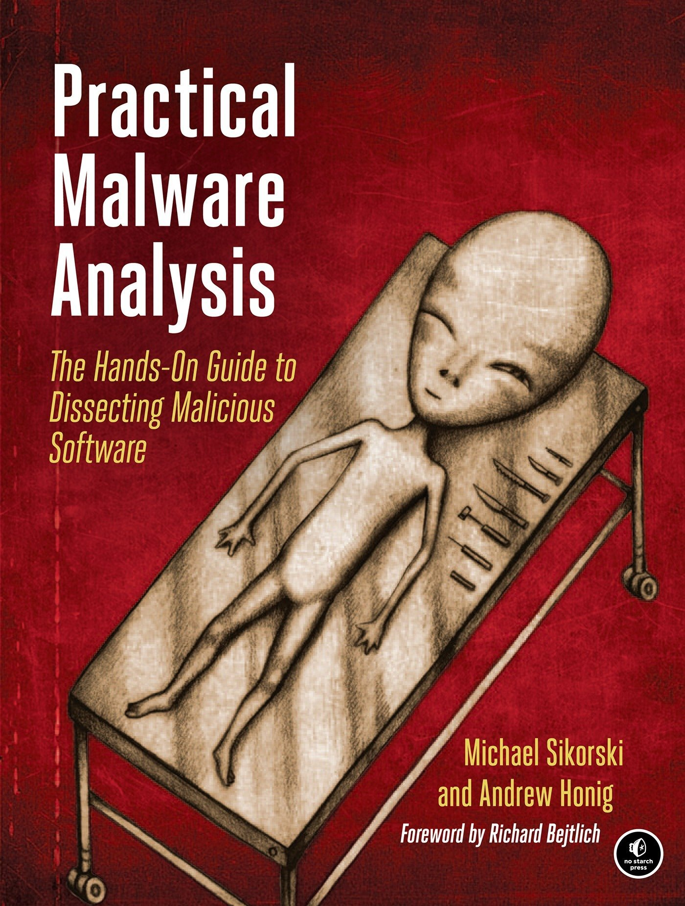

| Navigation Pane | Book library: Book 2 |
||
|---|---|---|---|
| Home | |||
| Books | |||
| Contact Us | |||
| Survey | |||
|  |
Practical Malware Analysis: The Hands-On Guide to Dissecting Malicious Software Malware analysis is big business, and attacks can cost a company dearly. When malware breaches your defenses, you need to act quickly to cure current infections and prevent future ones from occurring. For those who want to stay ahead of the latest malware, Practical Malware Analysis will teach you the tools and techniques used by professional analysts. With this book as your guide, you'll be able to safely analyze, debug, and disassemble any malicious software that comes your way. |
Back to book library |